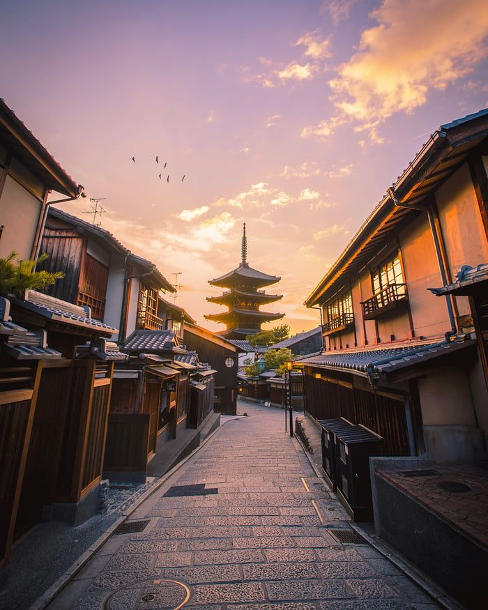
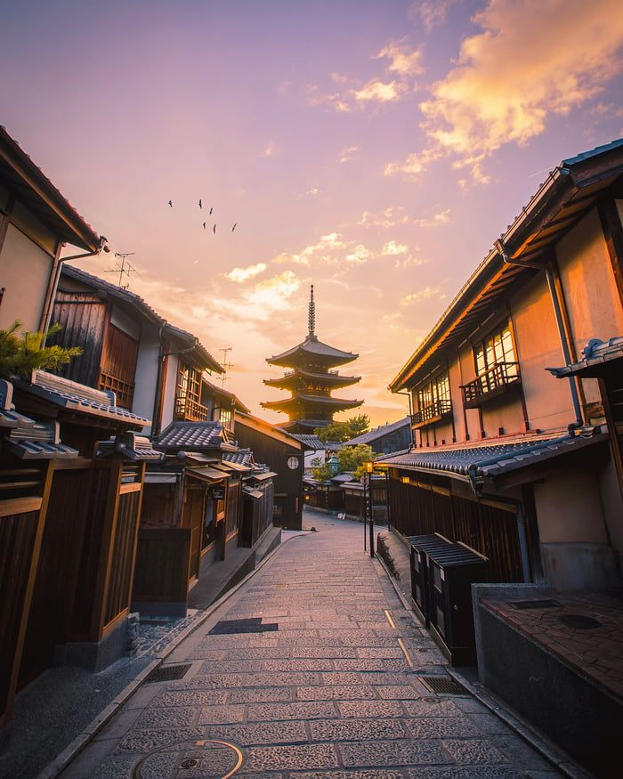

Kyoto Japan just seems pretty cool. It is known as a cultural capital of japan. Kyoto has many Buddhist temples, gardens, imperial palaces, Shinto Shrines and traditional wooden houses.

In the southeren part of Kyoto their is a famous shrine. It is known as Fushimi Inari Shrine. It is famous for having thousands vermilion torii gates. The gates lead to the woods back to the Sacred Mount Inari. The shrines are dedicated to the shinto god of rice. The shrine has many fox statues that were the messengers of the rice god.
Kyoto Japan was once the capital. Kyoto is on an island of Honshu.
Many Shrines & Temples and other historical structures still remain in the city.
People can hike for 2-3 hours, or as long as they want into the woods.
It'll be a good way to experience the culture & the sites will be breathtaking.
 
